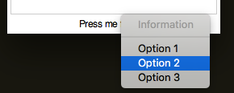

Toolbars, Menubars & Statusbars
Toolbars and Menubars are features common to most GUIs, you'll be used to seeing them along the top of apps, such as MS Word.
Statusbars are also useful features, they allow you to show information about what's going on in a GUI, usually along the bottom of the app.
Toolbar
Toolbars (sometimes known as ribbons) appear across the top of a GUI.
They offer a series of buttons to click, which can be used to change settings/functionality in a GUI.
NB. Icons don't work in python 2.7, due to an issue showing PNG images.

tools = ["ABOUT", "REFRESH", "OPEN", "CLOSE", "SAVE",
"NEW", "SETTINGS", "PRINT", "SEARCH", "UNDO",
"REDO", "PREFERENCES", "HOME", "HELP", "CALENDAR",
"WEB", "OFF"]
app.addToolbar(tools, tbFunc, findIcon=True)
Create Toolbars
-
.addToolbar(names, funcs, findIcon=False)
Will add a list of buttons along the top, in a toolbar. Each button will call the corresponding function.
If only one function is supplied, they will all call the same function, providing the button's name as a parameter.
A set of icons is available, iffindIconis set to True, then appJar will attempt to find an icon for each button. -
.addToolbarButton(name, func, findIcon=False)
Adds a single button to the toolbar - see above.
Set Toolbars
.setToolbarPinned(pinned=True)
Will configure the toolbar to be pinnable
When the mouse is not over the toolbar it will minimise.

The toolbar will also gain an extra button (a pin) allowing the user to configure it to be pinned or not.

-
.setToolbarIcon(name, icon)
Will set an icon for the corresponding button in the toolbar.
Use the name of any of the icons in the resource folder (without the folder or file extension). -
.setToolbarImage(name, image)
Will set an image for the corresponding button in the toolbar. -
.setToolbarEnabled()&.setToolbarDisabled()
Will enable/disable all buttons on the toolbar. -
.setToolbarButtonEnabled(name)&.setToolbarButtonDisabled(name)
Will enable/disable the named toolbar button. -
.showToolbar()&.hideToolbar()
Will show/hide the toolbar. -
.removeToolbarButton(name, hide=True)
Will remove the named button from the toolbar.
The toolbar will be hidden when there are no buttons on it, unlesshideis set to False. -
.removeToolbar(hide=True)
Will remove all buttons from the toolbar.
The empty toolbar will be hidden, unlesshideis set to False. -
.setToolbarBg(bg)
Will change the toolbar to be the specified colour.
The empty toolbar will be hidden, unlesshideis set to False.
Menubar
Adds a Menubar along the top of the GUI.
- On Windows/Linux a menubar will only be shown, once the first menu has been added.
- On Mac, a menubar is always present.
Menubars are made up of a series of menus, each containing a list of items:
- Menu-items - a clickable button, that calls a function
- Radio-buttons - groups of options, only one of which can be selected
- Checkboxes - boxes that can be ticked or unticked
- Separators - lines to help group items together
- Submenus - another menu, with its own list of items
Create Menus

fileMenus = ["Open", "Save", "Save as...", "-", "Export", "Print", "-", "Close"]
app.addMenuList("File", fileMenus, menuPress) # create the File menu, with the list of items
-
.addMenuList(menu, names, functions)
Will create a new menu, containing the list of names.
Provide a single function - all names will call that function, passing their name.
Or a list of functions (the same length as names), each menu will call the corresponding function.
If a name is a-, then a separator will be added to the menu. -
.createMenu(menu, tearable=False)
Will create a new, empty menu, to add menu-items to. -
.addMenuItem(menu, name, func=None, shortcut=None, underline=-1)
Add a menu-item to the menu, with the specified function.
If the named menu does not exist, it will be automatically created.
If the name is-, then a separator will be added to the menu. -
.addMenuSeparator(menu)
Add a separator to the menu. -
.addMenuCheckBox(menu, name, function=None, shortcut=None, underline=-1)
Add a check box, to the menu, with the specified name. -
.addMenuRadioButton(menu, name, value, function=None, shortcut=None, underline=-1)
Add a radio button, to the menu, grouped by name, with the specified value.

app.createMenu("Config")
for i in range(5):
app.addMenuRadioButton("Config", "font", "1" + str(i), menuPress)
app.addMenuSeparator("Config")
for i in range(5):
app.addMenuCheckBox("Config", "Size 1" + str(i), menuPress)
.addSubMenu(menu, subMenu)
Adds a sub-menu to the specified menu.
Then add menu-items to this menu (using its name).

app.createMenu("Config")
app.addSubMenu("Config", "Font Size")
for i in range(5):
app.addMenuRadioButton("Font Size", "font", "1" + str(i), menuPress)
.addMenu(menu, function, shortcut=None, underline=-1)
This is a special case, and doesn't work on all platforms. Adds a single menu, with no list of menu-items, that calls the specified function.
Set Menus
-
.setMenuCheckBox(menu, name)
Inverts the specified check box, in the named menu. -
.setMenuRadioButton(menu, name, value)
Selects the specified value, of the specified radio button, in the named menu. -
.setMenuImage(menu, name, image, align='text')
Will set the specified image for the specified menu-item. -
.setMenuIcon(menu, name, icon, align='text')
Will set the specified icon for the specified menu-item. -
.disableMenuItem(menu, name)&.enableMenuItem(menu, name)
Will enable/disable the specified menu-item. -
.disableMenu(menu)&.enableMenu(menu)
Will disable/enable the specified menu. -
.disableMenubar()&.enableMenubar()
Will disable/enable all menus.
NB. currently doesn't disable entries in default Mac menus. -
.deleteMenuItem(menu, name)
Will delete the named item from the specified menu.
Get Menus
-
.getMenuCheckBox(menu, name)
Get the value of the specified check box, from the named menu.
Returns True or False. -
.getMenuRadioButton(menu, name)
Get the value of the specified radio button, from the named menu.
Returns the name of the checked radio button, for this group.
Extra Features:
These options aren't available when you add a list of menu-items, only when you call the specific add function.
underline- if set to an Integer, the corresponding character will be underlined.tearable- if set to True, it's possible to undock the menu.-
shortcut- these are keyboard shortcuts you press, to call a menu-item.
They should always be a combination of special keys and a regular key, separated by dashes.
e.g."Control-s"or"Control-Shift-z"The following special keys are available:
Control,Option,Alt,Shift,Command,MetaThere are some special cases:
- If you want to use numbers, you need to use the format:
Control-Key-3 - If you want some of the special characters, you may need to use their name:
Control-slash,Control-Up
NB. don't include angle brackets
<>around the shortcut.
NB. Lookout for clashes with regular key bindings - If you want to use numbers, you need to use the format:
Platform Specific/Custom Menus
There are a few special menus available; pop-up menus, that appear when you right-click a widget and platform specific menus.
To add items to these menus, use the menu names given below (eg. app.addMenuItem('EDIT', 'Name', func))
-
Right-Click Menus
-
Edit Menu (name:
EDIT) - provides a cut & paste style menu linked to all text, entry & option boxes.
Call.addMenuEdit(inMenuBar=False)to enable the Edit menu.
IfshowInBaris set toTrue, the Menu will also appear in the topLevel Menubar.
This menu does its best to show the appropriate options, for all situations - but doesn't know when you can't redo an action. -
Generic Menu
Call.createRightClickMenu(menu, showInBar=False)to create an empty right-click menu
IfshowInBaris set toTrue, the Menu will also appear in the topLevel Menubar.
The right-click menu can be populated the same way as regular menus.To link the right-click menu to a widget, call
.setXXXRightClick(widgetName, menu)
-

app.createRightClickMenu("Information", False)
app.addMenuList("Information", ["Information", "-", "Option 1", "Option 2", "Option 3"], infoMenu)
app.disableMenuItem("Information", "Information") # disable the title
app.addLabel("Press me")
app.setLabelRightClick("Press me", "Information")
- Windows
- System Menu (name:
WIN_SYS) - accessed by clicking the icon in the top left corner of the GUI.
- System Menu (name:
-
Mac - there are three default menus, each containing platform specific menu-items.
There are also a couple of menu-items the user can/should provide.-
Application Menu (name:
MAC_APP) - after the Apple logo (), usually called Python.
This menu is always present, and cannot be renamed - no matter how much I wish it could!
Call.addMenuPreferences(function)to enable the Preferences menu-item, within the Application Menu. -
Window Menu (name:
MAC_WIN) - contains menu-items related to windows.
To access this menu, you must first call.addMenuWindow() -
Help Menu (name:
MAC_HELP) - provides a Search menu-item
To access this menu, you must first call.addMenuHelp(function), passing the function to call for the default Python Help menu-item.
-
-
Linux - by default, there is no menu, but it's easy enough to include the appJar menus:

app.addMenuItem("appJar", "Help", app.appJarHelp)
app.addMenuItem("appJar", "About", app.appJarAbout)
Statusbar
Adds a statusbar along the bottom of the GUI. This can be used for easy debugging, as info for the user, or to show current settings.

app.addStatusbar(fields=3)
app.setStatusbar("Line: 20", 0)
app.setStatusbar("Column: 4", 1)
app.setStatusbar("Mode: Edit", 2)

app.addToolbar(tools, tbFunc, True)
app.addStatusbar(fields=3, side="RIGHT")
# NOTE: 0 is now on the right
app.setStatusbarWidth(50, 2)
app.setStatusbarBg("red", 2)
app.setStatusbarFg("white", 2)
Create Statusbars
.addStatusbar(header="", fields=1, side=None)
This turns the statusbar on, and if a header is supplied, will prepend the header before every status.
Iffieldsis populated, it's possible to have multiple status boxes, each addressable by a number.
sidecan be set as LEFT/RIGHT to make the fields appear from the left or right side, otherwise they will stretch equally.
Set Statusbars
-
.setStatusbar(text, field=0)
This updates the contents of the statusbar.
Again, if a header was set when adding the statusbar, it will be prepended to the message.
If multiple fields were created, a position should be supplied to populate (starting from 0). -
.clearStatusbar(field=0)
Clear anything displayed in the statusbar, along with any header that might be set.
If multiple fields were created, specify which one, otherwise all fields will be cleared. -
.setStatusbarWidth(width, field=0)
Set the width of the specified statusbar field (in characters). -
.setStatusbarHeader(header)
Set a new header value to be used from the next time the statusbar text is updated. -
.removeStatusbarField(field)
Remove the field at the specified position from the the statusbar. -
.removeStatusbar()
Removes the statusbar from the GUI.